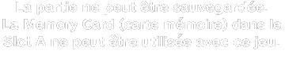
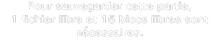
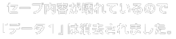

Ocarina of Time Master Quest Gamecube disc emulator messages
Images were extracted from the Japanese and US versions of the Ocarina of Time Master Quest
disc by Yanis, and the PAL version by me (EllipticEllipsis).
Transcriptions are a combination of OCR software, manual transcription, and my proofreading.
Additional translations are by me. Worth noting is that some of the official translations are quite loose: more literal ones are provided by the Wind Waker and Twilight Princess scripts. The reader can search a text dump using my transcriptions.
First are those that exist in all versions, and second those that are Japanese-exclusive; within each
category they are sorted alphabetically by filename. I may try to sort them into a more useful order in
future. Languages from left-to-right are Japanese, English, French, German.
The US and PAL releases have identical English messages (the files are byte-for-byte identical), so only
one English column is included.
Finally, obviously some of these images do not actually contain any text; I have left them in for
completeness.
Images that exist in more than one version
bar
Comment: The bar that fills up when saving. Identical on all versions.
coverOpen
ディスクフカバーが開いています。
ゲームを続ける場合は
ディスクフカバーを閉めてください。
The Disc Cover is open. If you'd
like to continue playing, please
close the Disc Cover.
La couvercle est ouvert.
Pour continuer à jouer,
veuillez fermer le couvercle.
Der Disc-Deckel ist geöffnet.
Wenn du weiter spielen möchtest,
schließe bitte den Disc-Deckel.
fatalErr
エラーが発生しました。
本体のパワーボタンを押して電源をＯＦＦにし
本体の取扱説明書の指示に従ってください。
An error has occurred.
Please turn the power off and
refer to your Nintendo GameCube
Instruction Booklet.
Une erreur est survenue. Eteignez la
console et référez-vous au manuel
d'instructions Nintendo GameCube pour
de plus amples informations.
Ein Fehler ist aufgetreten.
Bitte schalte den NINTENDO GAMECUBE
aus und lies die Bedienungsanleitung.
mesgAYSure
ゲームを続けますか？
(ゲーム内容はセーブされません)
Continue Game Without Saving Progress ?
Comment: Only JP and EN.
mesgOK
ＯＫ
OK
OK
OK
no
いいえ
no
Non
Nein
noDisk
「ゼルダの伝説 時のオカリナ ＧＣ」の
ディスクをセットしてください。
Please insert a Game Disc for
The Legend of Zelda: Ocarina of Time.
Veuillez insérer le disque du jeu
The Legend of Zelda: Ocarina of Time
Bitte lege eine Game-Disc für "The
Legend of Zelda: Ocarina of Time" ein.
readingDisk
ディスクを読め込んでいます⋯
Reading the Game Disc...
Lecture du disque en cours...
Game Disc wird gelesen...
retryErr
ディスクを読めませんでした。
くわしくは、本体の
取扱説明書をお読みください。
The Game Disc could not be read.
Please refer to your Nintendo Gamecube
Instruction Booklet for more information.
La lecture do disque a échoué. Veuillez
vous référer au manuel d'instructions
Nintendo GameCube pour de plus amples
informations.
Die Game Disc konnte nicht gele-
sen werden. Bitte lies di Bedien-
ungsanleitung des NINTENDO
GAMECUBE.
wrongDisk
このディスクは
「ゼルダの伝説 時のオカリナ ＧＣ」の
ディスクではありません。
「ゼルダの伝説 時のオカリナ ＧＣ」の
ディスクをセットしてください。
Please insert a Game Disc for
The Legend of Zelda: Ocarina of Time.
Veuillez insérer le disque du jeu
The Legend of Zelda: Ocarina of Time
Bitte lege eine Game-Disc für "The
Legend of Zelda: Ocarina of Time" ein.
Comment: The first sentence is JP-only: it translates to "This disc is not a 'The Legend of
Zelda: Ocarina of Time' disc."
yes
はい
yes
Oui
Ja
z_bnr
Comment: The disc logo. Identical on all versions.
z_icon
Comment: Identical on all versions.
msg_gf01
スロットＡのメモリーカードに
このゲームのファイルを
作りますか？
Would you like to create a
save file for this game on
the Memory Card in Slot A?
Créer un fichier de sauvegarde pour ce
jeu sur la Memory Card (carte mémoire)
dans le Slot A?
Möchtest du für dieses Spiel eine
Datei auf der Memory Card (Speicher-
karte) in Steckplatz A erstellen?
msg_gf02
ファイルを作っています。
メモリーカードや
パワーボタンに
さわらないで下さい。
A save file is being created...
Do NOT touch the
Memory Card or
the Power Button.
Création du fichier de
sauvegarde en cours...
Ne touchez pas à la Memory Card
(carte mémoire) ni au bouton POWER.
Die Datei wird erstellt...
Di Memory Card (Speicherkarte)
nicht entfernen und
nicht den POWER-Schalter betätigen!
msg_gf03
ファイルを作りました。
A save file has been created.
La création du fichier de
sauvegarde a réussi.
Die Datei wurde erstellt.
msg_gf04
ファイルを作るのに
失敗した可能性があります。
A save file could not be created. You
will be unable to save your game.
La création du fichier de
sauvegarde a échoué.
Vous ne pourrez pas
sauvegarder votre partie.
Die Datei konnte
nicht erstellt werden.
Du kannst dein Spiel
leider nicht speichern.
msg_gf05
セープできません。
スロットＡのメモリーカードには
このゲームセーブする
ファイルがありません。
The game cannot be saved.
There is no save file for
this game on the
Memory Card in Slot A.
La partie ne peut être sauvegardée.
Il n'existe aucun fichier de sauvegarde
pour ce jeu sur la Memory Card
(carte mémoire) dans le Slot A.
Das Spiel konnte nicht gespeichert
werden. Es ist keine Datei für dieses
Spiel auf der Memory Card (Speicher-
karte) in Steckplatz A vorhanden.
msg_gf06
スロットＡのメモリーカードには
このゲームセーブする
ファイルがありません。
There is no save file
for this game on the
Memory Card in Slot A.
Il n'existe aucun fichier de sauvegarde
pour ce jeu sur la Memory Card
(carte mémoire) dans le Slot A.
Es ist keine Datei für dieses Spiel auf
der Memory Card (Speicherkarte) in
Steckplatz A vorhanden.
msg_in01
初期化すると
メモリーカード内の
データはすべて消えます。
よろしいですか？
If you format this Memory Card
all saved data will be erased.
Do you want to continue?
Formater la Memory Card (carte mémoire)
entraînera la perte de toutes les
données sauvegardées.
Voulez-vous continuer?
Bei der Formatierung diser Memory
Card (Speicherkarte) gehen alle ge-
speicherten Daten verloren. Möchtest
du trotzdem fortfahren?
msg_in02
初期化しています。
メモリーカードや
パワーボタンに
さわらないで下さい。
Formatting the Memory Card...
Do NOT touch the
Memory Card or
the Power Button.
Formatage de la Memory Card
(carte mémoire) en cours...
Ne touchez pas à la Memory Card
(carte mémoire) ni au bouton POWER.
Memory Card (Speicherkarte) wird
formatiert⋯ Die Memory Card
(Speicherkarte) nicht entfernen und
nicht den POWER-Schalter betätigen.
msg_in03
初期化しました。
The Memory Card has been formatted.
La Memory Card (carte mémoire)
a été formatée.
Die Memory Card (Speicherkarte)
wurde formatiert.
msg_in04
初期化に
失敗した可能性があります。
The Memory Card could not be
formatted. You will not be able
to save your game.
La formatage de la Memory Card (carte
mémoire) a échoué. Vous ne pourrez pas
sauvegarder votre partie.
Die Memory Card (Speicherkarte)
konnte nicht formatiert werden. Du
kannst dein Spiel leider nicht speichern.
msg_in05
スロットＡのメモリーカードは
このゲームでは使用できません。
The Memory Card in Slot A
cannot be used to save this game.
La Memory Card (carte mémoire) dans le
Slot A ne peut être utilisée avec ce jeu.
Die Memory Card (Speicherkarte) ist
zur Speicherung dieses Spiels nicht
geeignet.
msg_ld01
スロットＡにメモリーカードが
見つかりません。
メモリーカードの接続を
確認して下さい。
A Memory Card is not
inserted in Slot A. Please
check to make sure that a
Memory Card is inserted.
Aucune Memory Card (carte mémoire)
n'est détectée dans le Slot A.
Veuillez vérifier qu'une Memory Card
(carte mémoire) a bien été insérée.
Es befindat sich keine Memory Card
(Speicherkarte) in Steckplatz A. Bitte
stecke eine Memory Card in
Steckplatz A ein.
msg_ld02
スロットＡにメモリーカードは
こわれているので使用できません。
The Memory Card in Slot A is
damaged and cannot be used.
La Memory Card (carte mémoire) dans le
Slot A est endommagée et ne peut être
utilisée.
Die Memory Card (Speicherkarte) in
Steckplatz A ist beschädigt und kann
nicht benutzt werden.
msg_ld03
スロットＡには
メモリーカード以外のものが
ささっています。
The device inserted in Slot A
is not a Memory Card.
L'objet inséré dans le Slot A n'est pas
valide. Veuillez insérer une
Memory Card (carte mémoire).
Das Objekt in Steckplatz A ist keine
Memory Card (Speicherkarte).
msg_ld04
スロットＡのメモリーカードには
対応していません。
The Memory Card in Slot A is
not compatible with this game.
La Memory Card (carte mémoire) dans le
Slot A ne peut être utilisée
avec ce jeu.
Die Memory Card (Speicherkarte) in
Steckplatz A ist für dieses Spiel nicht
geeignet.
msg_ld05_1
スロットＡのメモリーカードは
データがこわれているので
初期化が必要です。
The Memory Card in
Slot A is corrupted and
must be formatted.
La Memory Card (carte mémoire) dans le
Slot A contient des données corrompues
et a besoin d'être formatée.
Die Memory Card (Speicherkarte) in
Steckplatz A ist fehlerhaft und muss
formatiert werden.
msg_ld05_2
初期化しますか？
Format the Memory Card now?
Formater la Memory Card (carte mémoire)
maintenant?
Möchtest du die Memory Card
(Speicherkarte) jetzt formatieren?
msg_ld06_1
スロットＡのメモリーカードは
空き容量がないか、ファイル数の
制限を超えてしまいます。
The Memory Card in Slot A
does not have enough space
available to save this game.
Il n'y a pas assez d'espace libre sur
la Memory Card (carte mémoire) dans le
Slot A pour sauvegarder cette partie.
Die Memory Card (Speicherkarte) in
Steckplatz A besitzt nicht genügend
Speicherplatz, um das Spiel zu speichern.
msg_ld06_2
このゲームをセーブするには
ファイル１つと１５ブロックの
空き容量が必要です。
This game requires
1 file and 15 blocks
to save your progress.
Pour sauvegarder cette partie,
1 fichier libre et 15 blocs libres sont
nécessaires.
Zur Sicherung dieses Spiels werden
eine freie Datei und 15 freie Blöcke
benötigt.
msg_ld06_3
本体のメモリーカード画面で
メモリーカード内容の整理をして下さい。
Please manage your data on the
system Memory Card screen.
Veuillez utiliser l'Ecran Memory Card
(carte mémoire) pour gérer le contenu
de votre Memory Card (carte mémoire).
Bitte rufe den Memory Card-Bild-
schirm auf, um bereits gespeicherte
Daten zu verwalten.
msg_ld06_4
本体のメモリーカード画面を開きますか？
（本体のメモリーカード画面は
Ａボタンを押したまま、
電源を入れ直しても開くことができます）
Would you like to manage data now?
Voulez-vous gérer le contenu de la
Memory Card (carte mémoire) maintenant?
Möchtest du bereits gespeicherte
Daten jetzt verwalten?
Comment: The bracket is JP-only. The English Twilight Princess translation gives this message as
Open the Memory Card screen of the
console menu? (You may also open
the Memory Card screen by powering
down, then powering back on while
holding down the A Button.)
msg_ld07
セーブはできませんが
ゲームを続けますか？
You cannot save your game.
Would you like to continue anyway?
La partie ne peut être sauvegardée.
Continuer sans sauvegarder?
Du kannst dein Spiel nicht speichern.
Möchtest du ohne Sicherung
fortfahren?
msg_sv01
セーブできません。
スロットＡにメモリーカードが
見つかりません
The game cannot be saved.
A Memory Card is not
inserted in Slot A.
La partie ne peut être sauvegardée.
Aucune Memory Card (carte mémoire)
n'est détectée dans le Slot A.
Das Spiel kann nicht gespeichert
werden. Es befindet sich keine
Memory Card (Speicherkarte) in
Steckplatz A.
msg_sv01_2
メモリーカードの接続を
確認して下さい。
Please check to make sure a
Memory Card has been inserted.
Veuillez vérifier qu'une Memory Card
(carte mémoire) a bien été insérée.
Bitte überprüfe, ob eine Memory Card
(Speicherkarte) eingesteckt ist.
msg_sv02
セーブできません。
スロットＡにメモリーカードは
こわれているので使用できません。
The game cannot be saved.
The Memory Card in Slot A is
damaged and cannot be used.
La partie ne peut être sauvegardée.
La Memory Card (carte mémoire) dans le
Slot A est endommagée et ne peut être
utilisée.
Das Spiel konnte nich gespeichert
werden. Die Memory Card (Speicher-
karte) in Steckplatz A ist beschädigt
und kann nicht verwendet werden.
msg_sv03
セーブできません。
スロットＡには
メモリーカード以外のものが
ささっています。
The game cannot be saved.
The device inserted in Slot A
is not a Memory Card.
La partie ne peut être sauvegardée.
L'objet inséré dans le Slot A n'est pas
valide. Veuillez insérer une
Memory Card (carte mémoire).
Das Spiel konnte nich gespeichert
werden. Das Objekt in Steckplatz A ist
keine Memory Card (Speicherkarte).
msg_sv04
セーブできません。
スロットＡにメモリーカードは
このゲームに対応していません。
The game cannot be saved.
The Memory Card in Slot A is
not compatible with this game.

La partie ne peut être sauvegardée.
La Memory Card (carte mémoire) dans le
Slot A ne peut être utilisée avec ce jeu.
Das Spiel konnte nich gespeichert
werden. Die Memory Card (Speicher-
karte) in Steckplatz A ist für dieses
Spiel nicht geeignet.
msg_sv05_1
スロットＡのメモリーカードは
データがこわれているので
初期化が必要です。
The game cannot be saved. The
Memory Card in Slot A is corrupted
and needs to be formatted.
La partie ne peut être sauvegardée.
La Memory Card (carte mémoire) dans le
Slot A contient des données corrompues
et a besoin d'être formatée.
Das Spiel konnte nich gespeichert
werden. Die Memory Card (Speicher-
karte) in Steckplatz A ist fehlerhaft und
muss formatiert werden.
msg_sv06_1
セーブできません。
スロットＡのメモリーカードは
空き容量がないか、ファイル数の
制限を超えてしまいます。
The game cannot be saved.
The Memory Card in Slot A
does not have enough space
available to save this game.
Il n'y a pas assez d'espace libre sur
la Memory Card (carte mémoire) dans le
Slot A pour sauvegarder cette partie.
Das Spiel kann nicht gespeichert
werden. Auf der Memory Card befindet
sich nicht genügend Speicherplatz,
um das Spiel zu speichern.
msg_sv06_2
このゲームをセーブするには
ファイル１つと１５ブロックの
空き容量が必要です。
This game requires
1 file and 15 blocks
to save.

Pour sauvegarder cette partie,
1 fichier libre et 15 blocs libres sont
nécessaires.
Zur Sicherung dieses Spiels werden
eine freie Datei und 15 freie Blöcke
benötigt.
msg_sv06_3
スロットＡに空き容量のある
メモリーカードをさすか、
本体のメモリーカード画面で
メモリーカード内容の整理をして下さい。
Please insert a Memory Card
with enough space into Slot A
or use the system Memory Card
screen to manage saved data.
Insérez une Memory Card (carte mémoire)
avec suffisament d'espace libre dans
le Slot A ou gérez vos données à partir
de l'Ecran Memory Card (carte mémoire).
Bitte setze ein Memory Card mit aus-
reichend Speicherplatz in Steckplatz A
ein oder benutze den Memory Card-
Bildschirm, um Daten zu verwalten.
msg_sv06_4
本体のメモリーカード画面を開きますか?
（本体のメモリーカード画面は
Ａポタンを押したまま、
電源を入れ直しても開くことができます）
Would you like to manage data now?
Voulez-vous gérer le contenu de la
Memory Card (carte mémoire) maintenant?
Möchtest du bereits gespeicherte
Daten jetzt verwalten?
msg_sv06_5
現在のゲーム内容は
セープできませんが
よろしいですか？
You cannot save your game.
Would you like to continue anyway?
La partie ne peut être sauvegardée.
Continuer sans sauvegarder?
Du kannst dein Spiel nicht speichern.
Möchtest du ohne Sicherung fortfahren?
msg_sv07
セーブできません。
このデータは
最後にセーブした
データではありません。
The game cannot be saved.
The data on the Memory Card in
Slot A does not match the data
from the last time you saved.
La partie ne peut être sauvegardée.
Les données contenues sur la Memory
Card (carte mémoire) dans le Slot A
sont corrompues.
Das Spiel konnte nicht gespeichert wer-
den. Die Datten auf der Memory Card in
Steckplatz A entsprechen nicht den
zuletzt gespeicherten Daten.
msg_sv08
スロットＡにメモリーカードにある
セーブデータはこわれています。
このデータのファイルを
作りなおしますか？
The data on the Memory Card
in Slot A is corrupted.
Would you like to create a
new game file?
La Memory Card (carte mémoire) dans le
Slot A continent des données corrompues.
Voulez-vous créer un nouveau fichier de
sauvegarde?
Die Daten auf der Memory Card
(Speicherkarte) in Steckplatz A sind
fehlerhaft. Möchtest du eine neue
Spieldatei einrichten?
msg_sv09
セーブしています。
メモリーカードや
パワーボタンに
さわらないで下さい。
Saving...
Do NOT touch the Memory Card
or the Power Button.
Sauvegarde en cours...
Ne touchez pas à la Memory Card (carte
mémoire) ni au bouton POWER.
Spiel wird gespeichert...
Bitte nicht die Memory Card (Speicherkarte)
entfernen und nicht den POWER-
Schalter betätigen!
msg_sv10
セープに失敗した可能性があります。
The game could not be saved.
La partie ne peut être sauvegardée.
Das Spiel konnte nicht gespeichert werden.
msg_sv11
セーブできません。
スロットＡにメモリーカードは
このゲームでは使用できません。
The game cannot be saved.
The Memory Card in Slot A
cannot be used with this game.
La partie ne peut être sauvegardée.
La Memory Card (carte mémoire) dans le
Slot A ne peut être utilisée avec ce jeu.
Das Spiel konnte nicht gespeichert
werden. Die Memory Card (Speicher-
karte) ist zur Speicherung dieses
Spiels nicht geeignet.
msg_sv12
セーブが終了しました。
Your progress was saved.
La partie a été sauvegardée.
Dein Spielstand wurde gespeichert.
msg_sv_share
スロットＡに
正常なメモリーカードを
さして下さい。
Please insert a functional
Memory Card in Slot A.
Veuillez insérer une Memory Card
(carte mémoire) valide dans le Slot A.
Bitte setze eine funktionierende
Memory Card (Speicherkarte) in
Steckplatz A ein.
Messages exclusive to JP
askAYSure
本当にいいですか？
Translation: Is this really okay?
askFormat
初期化するとメモリーカード内の
全てのファイルが消えせしまいます。
よろしいですか？
Translation: If you format this Memory Card all saved data will be erased.
Do you want to continue?
askStartGame
ゲーム内容はセーブされません。
ゲームを始めますか？
Translation: Game progress will not be saved.
Begin game?
createNewGame
新しいゲームデータを
作成しますか？
Translation: Create new save data?
doChecking
メモリーカードをチェックしています⋯
Translation: Checking Memory Card...
doFormating
メモリーカードを初期化しています⋯
メモリーカードや本体のパワーボタンに
さわらないでください。
Translation: Formatting the Memory Card...
Do NOT touch the Memory Card or the system's Power Button.
doUpdating
データを更新しています⋯
メモリーカードや本体のパワーボタンに
さわらないでください。
Translation: Updating data...
Do NOT touch the Memory Card or the system's Power Button.
mesgCancel
キャンセル
Translation: Cancel
mesgDamaged
このメモリーカードは初期化が必要です。
初期化しますか？
Translation: The Memory Card needs to be formatted.
Format it now?
mesgDifferent
現在のゲーム内容が上書きされます。
よろしいですか？
Translation: Current game progress will be overwritten.
Is that okay?
mesgEraseData1

セーブ内容が壊れているので
「データ１」は消去されました。
Translation: Because the save content is broken, "Data 1" will be erased.
mesgFormatFail
初期化に失敗した可能性があります。
Translation: It is possible that formatting failed.
mesgFormatOK
初期化しました。
Translation: Formatted.
mesgNoCard
スロットＡにメモリーカードがありません。
（ゲーム内容はセーブされません）
Translation: There is no Memory Card in Slot A.
(Game progress will not be saved.)
mesgNoFreeFile
ファイル数の制限を超えてしまうので、
これ以上ファイルを作ることができません。
メモリーカードを整理しますか？
Translation: Because the file limit has been exceeded, it is not possible to create a new
file.
Manage Memory Card now?